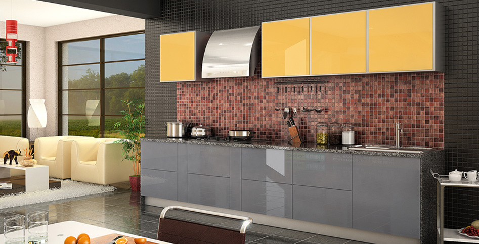
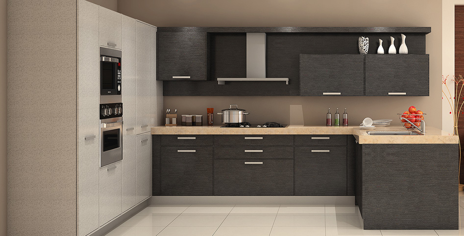

|
|
Home |
Modular Kitchen |
Electric |
Decore |
About |
Contact |
|---|

MODULAR KITCHEN |
AN INTRODUCTION TO MODULAR KITCHENS |
|
What exactly is a modular kitchen? A simply a term used for the modern-day kitchen furniture layout which is especially designed to optimize functionality and the use of space. These kitchens use various modules (units) of cabinets that are crafted out of diverse materials and hold kitchen accessories inside. The basic structure of a modular kitchen is extremely practical. The units on the floor are called 'base cabinets' and serve as the foundation for the kitchen worktop which is usually made out of granite, marble, tile or wood. The ones fastened on the wall for storage purposes are known as 'wall cabinets'. |
MODULAR KITCHEN DESIGNS |
|  | ||
|---|---|---|
|  | ||
BUYING PROCESS |
1VISIT OUR KITCHENS' STOREThe first thing you do is visit our store. The different modular kitchens on display will allow you to understand the layouts and components, giving you a fair idea of what would suit your space well. |
2MEET OUR DESIGNERAfter understanding the various layouts, components and materials of the modular kitchens on display at our store, allow our designers to help you think a step further. The designer will ask you a series of questions. |
3YOUR DREAM KITCHEN ON PAPERPost your approvals on the design and finalisation of suggested accessories and appliances (based on your budget), the designer will send a team of technicians to your place for actual measurements. |
4YOUR DREAM KITCHEN -A REALITYOnce the made-to-order kitchen components and cabinets are delivered to your home, our well skilled and efficient installation team will assemble the kitchen within 48-72 hours, depending on the area. |
HOW TO PLAN YOUR MODULAR KITCHEN |
|
|
Contact Us: +91-94170-23632, 94171-02431 Aggarwal Colony, Near Green House, Bathinda.(151001) |
© 2015 JRK Industry. ALL RIGHTS RESERVED. Developed By Technopedia Solutions Pvt |